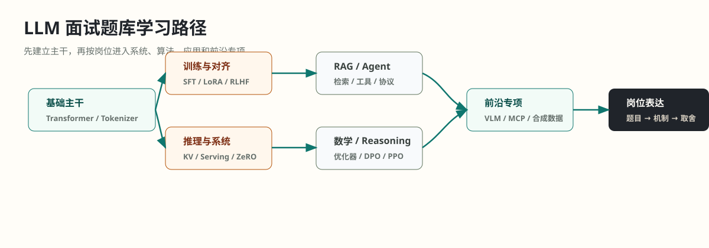

大模型面试题库
这份材料已重新按学习逻辑分层：先读方法与地图，再读核心完整答案，最后按岗位补专项。章节编号保留为稳定链接，阅读顺序以新的分组和上一页/下一页为准。

先把材料当成三层，不要按文件编号硬读
这份题库现在按学习用途重排：前面是地图，中间是完整答案，后面是专项强化和附录。原始编号仍保留，便于从旧链接跳转；真正的阅读顺序以本页分组和章节页上一页/下一页为准。
入口方法 -> 核心地图 -> 核心完整答案 -> 数学/优化器/RL/Reasoning -> 长上下文与前沿专项。
核心地图 -> 推理优化完整答案 -> 架构算力 -> 分布式训练 -> KV cache 压缩与投机解码。
核心地图 -> RAG/Agent 完整答案 -> 评测安全 -> MCP/A2A/Tool Schema -> 系统设计与成本治理。
先建立整份资料的用途、常见追问方式和岗位准备策略。这里解决“怎么读”和“怎么答”，不要急着背细节。
这组页面只用来建立知识树：每章看题型、考点和作答抓手。详细答案不在这里展开，避免同一问题前后重复讲。
真正需要逐题精读的是这一组。它承接上一组十个模块地图，把 1-120 题按“定义、机制、取舍、追问”展开。
这是查漏补缺层，不适合线性阅读。复习完完整答案后，用它检查每道题背后的原理点、工程点和 trade-off 是否遗漏。
把结构题、RoPE/长上下文、参数量估算和手写代码放在一起读。它们共同考察“能否把模型结构落到公式、显存和实现”。
先理解分布式训练和显存优化，再看推理系统里的 KV cache、continuous batching、投机解码。平台岗和推理工程岗应重点读。
这一组是算法强面的底座：先补数学，再看优化器，之后进入 PPO/GRPO 和 reasoning 后训练。顺序不能反过来。
这是前沿专项层。按“模态扩展 -> 模型压缩/合成数据 -> Agent 协议 -> 代码模型”的顺序读，比按新增批次顺序更自然。
这组不是主线内容，而是辅助材料：操作系统基础、DeepSeek 面经策略、历史速查表、遗漏补答、参考来源。需要时查。